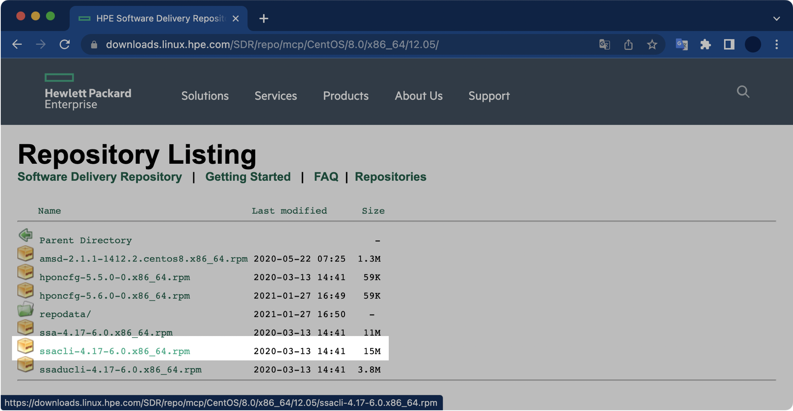

CentOS 7에서 hpssacli 설치 및 사용법
개요
- CentOS 7 + HP ProLiant 서버 조합에
ssacli(Smart Storage Administrator CLI) 패키지를 설치한다. ssacli(Smart Storage Administrator CLI) 명령어를 실행해 RAID 구성정보와 디스크 용량, RPM, Serial Number 등의 디스크 상세정보를 확인할 수 있다.
환경
- OS : CentOS Linux release 7.6.1810 (Core)
- Kernel : 3.10.0
- Shell : bash
절차
1. 패키지 설치파일 다운로드
hpssacli
HPE SSA CLI(HPE Smart Storage Administrator CLI)는 HPE Smart Arrays 컨트롤러 및 HPE SAS HBA를 신속하게 설치, 구성 및 관리하는 단일 인터페이스를 제공하는 Storage 관리 프로그램이다.
줄여서 hpssacli 라고 부른다.
설치파일 다운로드 링크
HPE Software Delivery Repository
내 경우는 https://downloads.linux.hpe.com/SDR/repo/mcp/centos/8/x86_64/current/ 에 위치한 ssacli-4.17-6.0.x86_64.rpm 15MB 용량의 패키지 설치파일을 다운로드 받았다.

각 서버의 운영체제, CPU 아키텍쳐가 다양하기 때문에 본인의 환경에 맞게 패키지를 찾아서 다운로드 받는다.
이 글에서 운영체제와 CPU 아키텍쳐의 종류 및 확인방법까지는 다루지 않는다.
2. 패키지 설치파일 업로드
FTP 또는 SFTP를 이용해 서버에 패키지 설치파일을 업로드한다.
$ pwd
/root/rpms
내 경우 패키지 설치파일의 이름은 ssacli-4.17-6.0.x86_64.rpm 이다. ssacli v4.17 패키지 파일의 용량은 약 15MB 이다.
$ ls -lh /root/rpms
-rw-rw-r-- 1 testuser testuser 15M 8월 3 10:41 ssacli-4.17-6.0.x86_64.rpm
3. ssacli 설치
패키지 설치
Red Hat Enterprise Linux와 CentOS의 경우 패키지 관리자로 rpm을 사용한다.
패키지 설치 과정에서 발생할 수 있는 권한 문제를 방지하기 위해, 반드시 root 계정으로 전환한 후 패키지 설치 명령어 rpm -ivh <패키지 이름>.rpm 를 실행한다.
$ rpm -ivh ssacli-4.17-6.0.x86_64.rpm
준비 중... ################################# [100%]
Updating / installing...
패키지 설치 확인
설치된 ssacli RPM 패키지 정보를 확인한다.
$ rpm -qi ssacli
Name : ssacli
Version : 4.17
Release : 6.0
Architecture: x86_64
Install Date: 2021년 08월 03일 (화) 오전 10시 47분 35초
Group : Applications/System
Size : 42277683
License : See ssacli.license
Signature : RSA/SHA256, 2020년 01월 14일 (화) 오전 04시 23분 30초, Key ID cxxxaddexxcxbxxx
Source RPM : ssacli-4.17-6.0.src.rpm
Build Date : 2020년 01월 14일 (화) 오전 04시 26분 18초
Build Host : abls12ex6404.sde.rdlabs.hpecorp.net
Relocations : (not relocatable)
Packager : Hewlett Packard Enterprise Development LP
Vendor : Hewlett Packard Enterprise Development LP
URL : http://www.hpe.com
Summary : Command Line Smart Storage Administrator
Description :
The Command Line Smart Storage Administrator is the storage management
application suite for Proliant Servers.
Description 란에는 해당 패키지에 대한 간략할 설명이 적혀있다. HP ProLiant 모델에 제공되는 스토리지 관리 프로그램이라고 한다.
[...]
Description :
The Command Line Smart Storage Administrator is the storage management
application suite for Proliant Servers.
Smart Storage Administrator 모드 접속
$ ssacli
Smart Storage Administrator CLI 4.17.6.0
Detecting Controllers...Done.
Type "help" for a list of supported commands.
Type "exit" to close the console.
=>
SSA(Smart Storage Administrator) 모드에 접속하면 프롬프트가 => 모양으로 바뀐다.
4. RAID 컨트롤러 구성 상태 확인
명령어 형식
=> ctrl all show config
Shell에서 ssacli 모드에 접속하지 않고 ssacli 명령어를 한 번에 실행하는 방법은 아래와 같다.
$ ssacli ctrl all show config
명령어 결과
=> ctrl all show config
HPE Smart Array P408i-a SR Gen10 in Slot 0 (Embedded) (sn: PWXKVxxxHDKCQx)
Internal Drive Cage at Port 1I, Box 1, OK
Internal Drive Cage at Port 2I, Box 0, OK
Port Name: 1I (Mixed)
Port Name: 2I (Mixed)
Array A (SAS, Unused Space: 0 MB)
logicaldrive 1 (558.88 GB, RAID 1, OK)
physicaldrive 1I:1:1 (port 1I:box 1:bay 1, SAS HDD, 600 GB, OK)
physicaldrive 1I:1:2 (port 1I:box 1:bay 2, SAS HDD, 600 GB, OK)
SEP (Vendor ID HPE, Model Smart Adapter) 379 (WWID: xxxxxEC0xxCxBAxx, Port: Unknown)
600GB 물리 디스크 2개가 RAID 1으로 구성된 걸 확인할 수 있다. 모든 디스크 상태는 정상(OK)이다.
5. 특정 PD(Physical Drive) 상태 확인
명령어 형식
=> ctrl slot=<slot_number> pd <PortNumber>:<BoxNumber>:<BayNumber> show
ctrl all show config 명령어에서 확인한 Port, Box, Bay 번호를 토대로 특정 디스크의 정보를 확인할 수 있다.
예를 들어 1I:1:2 의 경우 1I Port, 1번 Box, 2번 bay에 장착한 물리 디스크이다.
명령어 결과
=> ctrl slot=0 pd 1I:1:1 show
HPE Smart Array P408i-a SR Gen10 in Slot 0 (Embedded)
Array A
physicaldrive 1I:1:1
Port: 1I
Box: 1
Bay: 1
Status: OK
Drive Type: Data Drive
Interface Type: SAS
Size: 600 GB
Drive exposed to OS: False
Logical/Physical Block Size: 512/512
Rotational Speed: 10000
Firmware Revision: HPD2
Serial Number: xxUxAxELFFxF
WWID: 00000000E000E000
Model: HP EG000600JWJNH
Current Temperature (C): 37
Maximum Temperature (C): 42
PHY Count: 2
PHY Transfer Rate: 12.0Gbps, Unknown
PHY Physical Link Rate: 12.0Gbps, Unknown
PHY Maximum Link Rate: 12.0Gbps, 12.0Gbps
Drive Authentication Status: OK
Carrier Application Version: 11
Carrier Bootloader Version: 6
Sanitize Erase Supported: True
Sanitize Estimated Max Erase Time: 4 hour(s), 1 minute(s)
Unrestricted Sanitize Supported: True
Shingled Magnetic Recording Support: None
Drive Unique ID: 00000000E000E000
명령어 결과에서 인터페이스 종류(Interace Type), 디스크 용량(Size), RPM(Rotational Speed), Serial Number, 전송속도(PHY Transfer Rate) 등 상세한 정보까지 확인이 가능하다. 심지어 디스크의 현재 온도(Current Temperature)까지 확인 가능하다.
6. SSA 모드 나가기
exit 명령어를 실행해서 SSA 모드를 빠져나올 수 있다.
=> exit
$
이걸로 SSA 설치 및 간단 사용법은 익혔다.
결론
서버 관리 업무 중 중요 테스크로 뽑히는 것 중 하나는 서버의 물리 디스크 및 RAID 구성 관리이다.
HPE에서 만든 서버의 경우, SSA CLI를 통해 디스크 제원과 상태, RAID 상태를 자세히 확인할 수 있다.
무엇보다 ssacli 명령어를 잘 활용하면 서버에 꽂힌 디스크 수량이나 모델명을 조사하러 데이터센터에 들어갈 일이 없다.
이 글을 읽는 분들은 대부분 시스템 엔지니어나 어드민일 것 같은데, 여러 대의 서버를 관리하는거 기왕이면 HPE 서버에는 모두 SSA CLI를 깔아놓도록 하자.
처음엔 패키지 설치 과정이 귀찮겠지만, 장기적 관점에서 훨씬 서버 관리가 편해질 것이다.